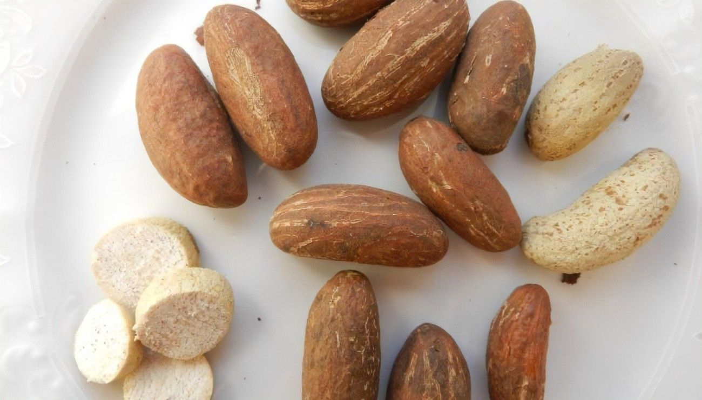
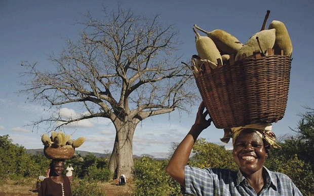
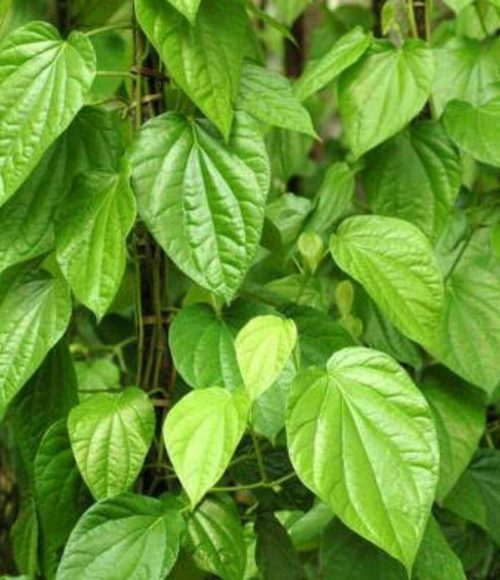
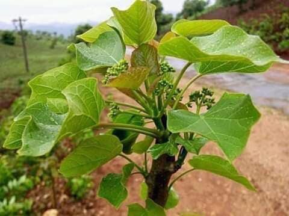
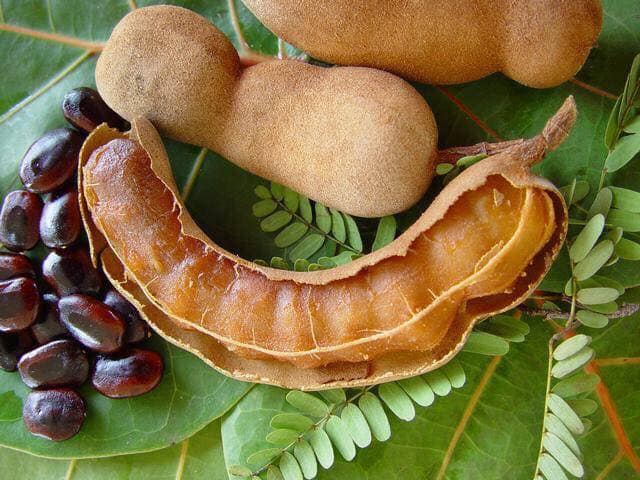
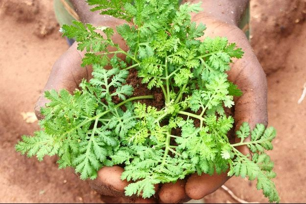
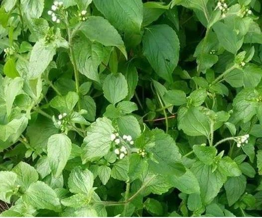

Cannabis
Le cannabis médical ou cannabis thérapeutique n’est pas considéré comme une drogue
et n’a pas d’effet psychotrope. De plus, il n’y a pas de risque d’addiction, à condition
de suivre à la lettre les recommandations du médecin. D’ailleurs, d’après les études,
ce produit aurait des vertus incroyables sur la santé.

Petit cola
Le petit-cola facilite la digestion. En cas d’indigestion, de diarrhée ou de ballonnements, il permet de réguler et de soulager le système digestif.
Il peut ainsi être pris par anticipation après un repas « douteux ».En plusLa consommation modérée du petit-cola maintient éveillé et accroit l’endurance
physique grâce à sa richesse en caféine et en théobromine. C’est aussi un puissant stimulant nerveux et physique qui augmente la résistance à la fatigue
et permet de rester alerte. La noix de petite-cola a un effet comparable à celui qu’une tasse de café.

Poudre de baobab
La teneur exceptionnelle en nutriments de la poudre de baobab lui vaut largement le titre de « superaliment ». Au-delà du marketing derrière le terme, on appelle ainsi les aliments qui se
démarquent par leur valeur nutritive exceptionnelle et leurs nombreux bienfaits pour la santé.
La poudre de baobab est une excellente source de vitamine C, une bonne source de vitamines B1 et B6,
de magnésium, de manganèse, et a une haute teneur en potassium. Elle est également très riche en fibres
alimentaires (composée à près de 50 % de fibres!) et est riche en antioxydants.
Malgré tous ses nutriments, la poudre de baobab est tout de même à consommer avec modération. Son important
apport en fibres et en potassium pourrait avoir des effets négatifs sur la santé s’ils sont consommés en trop grande quantité.

Gymnerma
Le Gymnerma présente de nombreux avantages qui peuvent aider les personnes souffrant de diabète, mais pas seulement,
il permet aussi de combler la sensation de faim et pourra donc etre bénéfique pour les personnes en surpoids qui souhaitent
perdre quelques kilos en utilisant un produits 100% naturel.

Jatropha-Vert
Prenez cette plante pour vous traiter. On l’appelle le jatropha, il s’utilise ainsi :
Contre le paludisme : faire bouillir les feuilles peu importe la quantité, recueillir la tisane et boire un verre le matin, un autre à midi et un autre verre le soir jusqu’à la guérison.
Pour traiter la fièvre typhoïde : prendre la tige sans les feuilles, je répète la tige découper cela comme des cure-dents et mettre dans un bidon y ajouter de l’eau, laisser reposer, puis
commencer à boire après 24h. Deux semaines après aller faire l’examen de sang. Guérison totale !

Tamarinier
Fruit du tamarinier, le tamarin est très répandu en Afrique, en Inde et aux Antilles. Encore appelé datte indienne, il est reconnu dans le monde entier pour son usage culinaire.
Mais ses vertus médicinales sont souvent méconnues. Si vous n’avez pas l’habitude de consommer du tamarin, voici dix raisons qui devraient vous faire changer d’avis.
Mais avant commençons par présenter ce fruit aux multiples bienfaits.
Le tamarin se présente sous forme de gousse contenant une pulpe fibreuse ainsi que des petites graines noires très souvent acidulées. Suivant le degré de maturité de l’arbre dont il provient le tamarin peut avoir des nuances sucrées, acides ou très acres.
Il est utilisé comme ingrédient culinaire de plusieurs façons suivant les différentes régions du monde. Au Sénégal par exemple, le tamarin est connu de tous pour accompagner le traditionnel thieboudieune.
Les autres composantes du tamarinier ne sont pas en reste. Des racines aux feuilles, presque toutes les parties de cet arbre tropical sont utilisées principalement en phytothérapie.
Le Cassia Alata, la plante africiane qui tue l’hépatite B en 72 heures
Faites bouillir la plante en question environ 60 minutes à feu ambiant,
laissez reposer et commencé à boire un verre chaque une heure pendant deux jours puis arrêtez la prise pendant deux jours.
Après ces deux jours de repos, reprenez le traitement mais cette fois-ci la dose réduite 3 fois par jour ( matin-midi-soir ) pendant 48 h.
En raison de ses propriétés fongicides, il est très efficaces pour traiter la teigne et d’autres infections fongiques de la peau.
Les feuilles sont broyées dans un mortier pour obtenir une sorte de « coton vert ». Celui-ci est mélangé avec la même quantité d’huile végétale et frotté sur la zone affectée deux ou trois fois par jour.
Une préparation fraîche est faite chaque jour. Ses ingrédients actifs comprennent de l’acide chrysophanique.

L’Artemisia, la plante africaine contre le paludisme
L’Artemisia, une plante de la famille des armoises, serait une bombe contre le paludisme. Capable de le prévenir, de le guérir, et peut-être même de l’éradiquer.
Les tisanes d’Artemisia rompent le cycle de transmission entre l’homme et le moustique
En plus d’être très efficaces, les tisanes seraient capables de mettre fin à ce fléau qui a traversé les siècles sans perdre de son activité.
Les propriétés et bienfaits de cette plante sont énormes. Elle soigne le paludisme, la fièvre, les maux de tête, la constipation, les règles douloureuses, l’acidité de l’estomac, la bilharziose, l’ulcère de Buruli, tuberculose, le diabète de type 2…
La personne atteinte du palu doit consommer 5 gr d’Artemisia annuapendant 7 jours. Après 2 jours, la fièvre est descendue et après 5 jours le patient ne montre plus de signe de palu.

Découvrez le Roi des herbes : cette plante africaine soigne plus de 289 maladies
Une plante appelée communément le Roi des herbes soigne plus de 289 maladies et est très
efficace conte les impuretés en plus de permettre aux femmes qui ont des difficultés pour
enfanter de réaliser leur rêve.